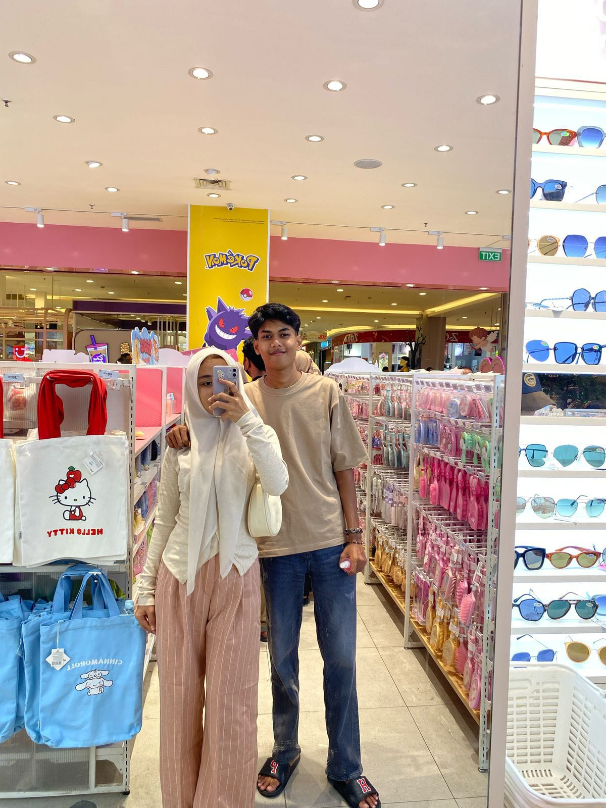
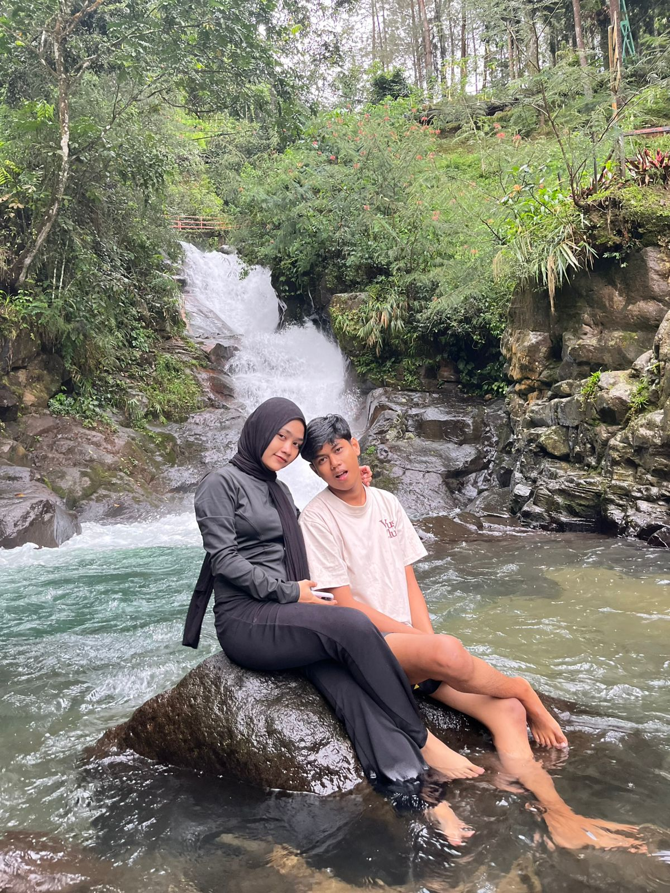
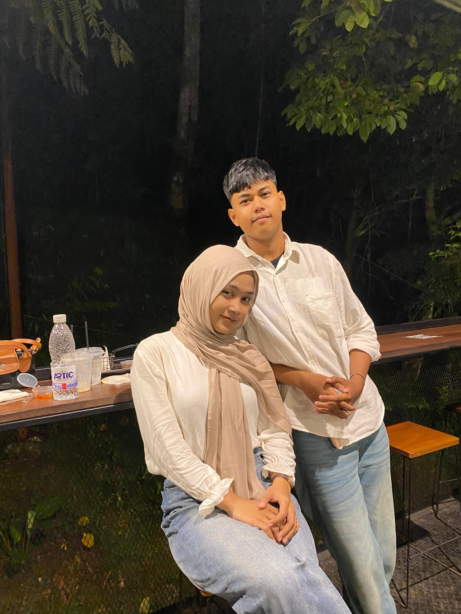

✨ Buat Kamu, Cintaku ✨
Happy Anniversary
Us Together ❤️
Udah Segini Lama Kita Bareng
0
Hari
0
Jam
0
Menit
0
Detik
Surat Kecil Buat Kamu
"
Hai sayang... lagi apa? Aku cuma pengen nulis ini buat kamu, walaupun bingung mulainya dari mana. Makasih ya, udah mau bertahan sama aku sampai sejauh ini. Kadang aku suka diem-diem mikir, dari semua orang yang ada di dunia ini, kok bisa ya aku ketemu kamu? Dan tiap kali mikirin itu, aku selalu sampai di jawaban yang sama: mungkin emang udah dari awal semesta nge-plot biar kita ketemu. Kita udah lewatin banyak hal ya, ada masa yang bikin capek, ada berantem-berantem kecil yang bikin gemes, tapi juga banyak banget momen receh yang bikin ketawa sampe sakit perut. Anehnya, semua itu malah jadi hal yang paling aku syukurin. Sama kamu, aku ngerasa nggak perlu jadi sempurna. Nggak perlu jaga image. Cukup jadi diri sendiri aja, udah cukup bikin aku ngerasa di rumah. Makasih udah sabar hadepin aku yang kadang ribet, makasih udah mau dengerin cerita-cerita nggak penting aku jam segini, dan makasih udah selalu ada, bahkan di hari-hari aku lagi berantakan. Happy anniversary, sayang. Aku nggak tau harus kasih apa buat ngebales semua yang udah kamu kasih, tapi aku janji akan terus belajar buat jadi pasangan yang lebih baik lagi buat kamu. Semoga kita masih dikasih banyak waktu buat bikin cerita baru bareng, buat berantem terus baikan lagi, buat ketawa bareng di hal-hal random, dan buat saling jaga sampai nanti. Aku sayang kamu — bukan cuma hari ini, tapi juga besok, dan semua hari sesudahnya.
Peluk jauh,
orang yang selalu kangen kamu 💕
Kenangan-Kenangan Kita

